Reverse-Engineering Jane Street’s 2026 ASIC Puzzle
This is my first time solving a Jane Street puzzle. I picked this specifically since it’s reverse engineering an ASIC, and I’m a wannabe hardware engineer.
The problem: Jane Street provides us with a GDS file, the final file we send to a foundry to get our chip taped out. Our mission is to derive the purpose of the chip based on the layout and polygons.
This writeup shows how the chip was cracked.
- code
- github.com/AndrewVu23/asic-puzzle-2026
- the puzzle
- Can you reverse engineer an ASIC? (Jane Street)
- the results
- Results from the ASIC puzzle (Jane Street)
TL; DR
- The puzzle: an 11×11 Star Battle validator, synthesized to a real sky130 ASIC and shipped as raw layout. No RTL, no schematic, no netlist.
- The method: write a GDSII parser and connectivity extractor from scratch, validate it against ground truth Jane Street themselves shipped, recover a 738-gate netlist, simulate it, and then measure the architecture out of it.
- The proof: rebuild the chip forwards from the recovered architecture, from RTL, synthesis, PnR, to GDS, showing the rebuild is bit-identical to the original.
1. What We Are Given
The package contains:
puzzle.gds the chip. 1.4 MB of geometry.
example_inputs.vcd the waveform: some stimulus, and what the chip did with it.
warmup/ a small unrelated design, showing the whole chip design flow.The warm-up which looks like a tutorial is actually an oracle, a design whose GDS & correct netlist we have so we can run our extractor on the warm-up, diff the result against the answer, and validate the scripts. Everything downstream rests on this.
What a GDS actually contains
A GDSII file is a flat stream of binary records describing shapes. The ones that matter:
| Record | Meaning |
|---|---|
BGNSTR / STRNAME |
begin a structure: a reusable cell definition |
BOUNDARY + LAYER + XY |
a filled polygon on a layer |
PATH + WIDTH + XY |
a centerline with a width, or a wire |
SREF + SNAME + XY |
place an instance of another structure here |
Two things:
First, hierarchy is by reference: the top structure puzzle contains 9,875 SREFs pointing at cell definitions, so to get absolute geometry we flatten the tree, composing transforms as we go.
Second, a wire and a via are geometry. “Net” is not stored anywhere. Electrical connectivity is an emergent property of overlapping shapes, and we have to recompute it.
The layer number alone is not enough either. A layer/datatype pair identifies meaning. (67,20) is local-interconnect metal, (67,44) is a contact cut through it, (67,16) is a pin marker, (67,5) is a text label. Same layer number but four different meanings.
Before running anything, we have to check if the cell names survive.
structures: 81
sample names: sky130_fd_sc_hd__nand2_2, sky130_fd_sc_hd__dfrtp_2, VIA_M1M2_PR, INTERNAL_7 ...They did. And that’s so clutch. Had they been stripped, the job would have been transistor-level recognition where we have to pull diffusion and poly geometry, find where they cross (each crossing is a transistor) group those into gates by topology, and match against a library, which I don’t think I’d be able to do any of that (lol).
2. From Polygons to a Netlist
Parsing
GDSII is a record of [length][type][payload]. I wrote my own rather than installing gdstk, mostly because I can know what is being silently dropped, partly because I didn’t want to deal with Python shenanigans (I did compare between the library and the DIY parser, and it matched perfectly).
Connectivity
The physical rule is simple: two conductors are the same net if they touch.
- Collect every conducting rectangle, local interconnect and metals 1 through 5, and flatten them to absolute coordinates.
- Union-find: same layer, overlapping or abutting => same net.
- Cut layers bridge vertically. A contact unions the shapes it overlaps on the layer below and the layer above.
Two details decide whether this works at all:
- Exclude
licon. That cut layer contacts poly and diffusion, the transistors themselves. We will bridge through it and every cell shorts through its own internals, collapsing the chip into one net.
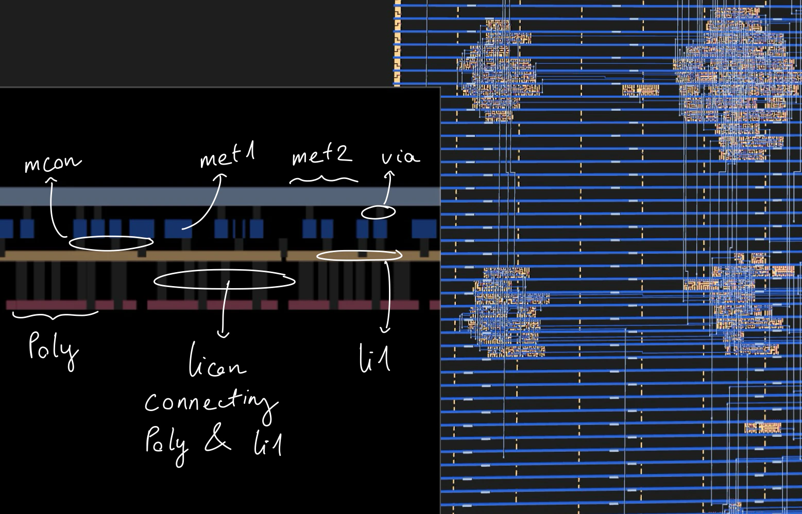
- Extract every conducting layer from inside cells, not just local interconnect. Most sky130 cells expose their pins on li1, but some (flip-flops and XORs among them) bring a pin up to metal-1 internally, and the router simply lands there. Pulling only li1 leaves those pins unreachable.
This is where the warm-up came to clutch. It diff named the broken net and the count of fragments in one step, helping me fix the parser.
Cell function
Since the sky130 PDK is open source, we can just fetch it and check:
and and0 (and0_out , A1, A2 );
or or0 (or0_out_X, and0_out, B1);
buf buf0 (X , or0_out_X );We then parse those primitives, evaluate them topologically. As a cross-check, 35 of the cells publish a closed form Boolean equation in their header comment, and all 35 agreed with the parsed version.
The three flip-flops use table-driven primitives that are awkward to parse, so they are hand-coded: a plain D flop, one with asynchronous reset, one with asynchronous set.
Simulation
With a netlist and cell functions we can simulate. First, we split instances into combinational, sequential and physical-only. After that, we topologically sort the combinational cells, then per cycle, apply inputs, evaluate in order, apply the clock edge, update the flops.
I wrote my own rather than using iverilog because the endgame needs two things a Verilog simulator makes awkward: read any internal net at any cycle, and drive stimulus programmatically inside a search loop.
| Check | Result |
|---|---|
| Placements vs the DEF, including orientation | 230/230 |
| Pin coverage | 291/291 pin-instances located |
| Net-by-net identity vs the DEF | 84/84 |
| Puzzle: drivers per net | 738/739 |
Puzzle: replay example_inputs.vcd |
312/312 cycles bit-exact on all 9 outputs |
The last one is decisive, since for passing by accident to happen, the placements, pin geometry, connectivity, cell functions, flop semantics and reset behavior would all have to be wrong in a mutually cancelling way, across 312 cycles and 9 output bits, including a non-trivial ASCII byte stream. That does not happen here.
The driver count is worth a note here. Since the nearest unconnected output is 12.77 µm away, about 30 routing tracks, not a near miss, it’s a genuinely floating input in Jane Street’s design, not an extraction failure (they confirmed it here). But it’s chill since both its loads sit outside the success logic.
First contact
Now we start poking it:
| Stimulus | Output as ASCII |
|---|---|
| the provided VCD | TRY AGAIN |
| all-zero input | EMPTY SKY |
| all-one input | BIG BANG |
| random input | TRY AGAIN |
TRY AGAIN is free information, not EMPTY SKY & BIG BANG though. We can tell that it’s not a fixed ROM, because it emits different strings for different machine states.
Also, sky & big bang? That sounds like a big hint. It reminded me of that Jane Street’s Star Battle Puzzle on Numberphile, and I’m going to use that as my main lead.
3. Understanding the shape
As the extraction is done and functionally proved, we move to the part with no algorithm: 738 gates with machine-generated names, and what are their meanings.
To investigate, we use 3 different techniques:
Cone of influence. Walk backwards from a signal through its driver, that driver’s inputs, their drivers, recursively. Basically trace everything back to its origin.
| Region | Instances | Flops |
|---|---|---|
success cone |
484 | 79 |
O[7:0] cone 71 |
3 92 | |
| O-only (the output generator) | 229 | 13 |
| success-only | 0 | n/a |
The success cone is entirely contained in the O cone and nothing is success-only. This confirmed what was stated in the Jane Street’s blog:
“There is one section of the design that is used to generate the output but does not affect the
successoutput.”
One-way information flow. Practically, 229 cells can be ignored until the very end.
Physical clustering. Placement is not random. The placer puts cells that talk to each other near each other, because wiring is expensive => proximity is evidence of relatedness.
By bucketing on a 60 µm grid, we can sort the checker on the left and center of the die and the generator on the right, past about 120 µm. We also find that 118 instances, zero flops, almost entirely in the success cone, which could be a comparator, an adder, or a wide decoder.
Flop dependency graph. Collapse combinational logic to edges, exposing sequential structure while hiding gate-level noise. Those are the patterns we are looking for:
| Pattern | Meaning |
|---|---|
| long chain, each flop one source | shift register |
| self-loop plus narrow increment logic | counter |
| self-loop plus XOR of a few taps | LFSR |
| dense mutual dependency | state machine/data path |
Which gave:
Zero simple chains. Not one flop has exactly one source flop.
All 92 flops depend on themselves through combinational logic.
Data-input fan-in widths cluster bimodally at 7 (25 flops) and 11 (22 flops). (7/11 lol. Easter egg worthy?)
Ifans out to 45 gates directly.
Looking at the results, my natural first guess for a 1-bit serial input and 92 flops is “shift register, then compare”, which is exactly what the warm-up design does.
But that’s not it. Also, a serial input touching 45 gates in one cycle doesn’t look like a shift-register load. It’s more like it’s participating in a wide computation every cycle.
My second guess is a “nonlinear cipher-style state being stirred by the input stream and compared against a hidden constant,” which almost sold the investigation.
4. The Verification
The method I used to validate was Perturbation: Reset, run the chip with I = 0 for N cycles (I used 140. The goal is just to investigate the flops’ states throughout the cycles). Call that the baseline. Then, for each cycle k, reset and run the same stimulus except with I = 1 at cycle k alone. Then compare the results:
| Hypothesis | Prediction |
|---|---|
| nonlinear digest | one bit flip diverges to roughly half the state within a few cycles and stays diverged |
| structured checker | one bit permanently perturbs only the accumulators that cell feeds |
The result:
k= 0 hd=[5,5,5,5,5,5,5,5,5,5] ... final= 3 changed={22, 55, 73}
k= 1 hd=[5,5,5,5,5,5,5,5,5,4] ... final= 3 changed={ 6, 55, 73}
k= 2 hd=[5,5,5,5,5,5,5,5,4,4] ... final= 3 changed={20, 55, 73}
...
k=10 hd=[4,4,4,4,4,4,4,4,4,4] ... final= 3 changed={ 9, 26, 55}
k=11 hd=[5,5,5,5,5,5,5,5,5,5] ... final= 3 changed={22, 55, 73} <= identical to k=0
k=12 hd=[5,5,5,5,5,5,5,5,5,4] ... final= 3 changed={ 6, 55, 73} <= identical to k=1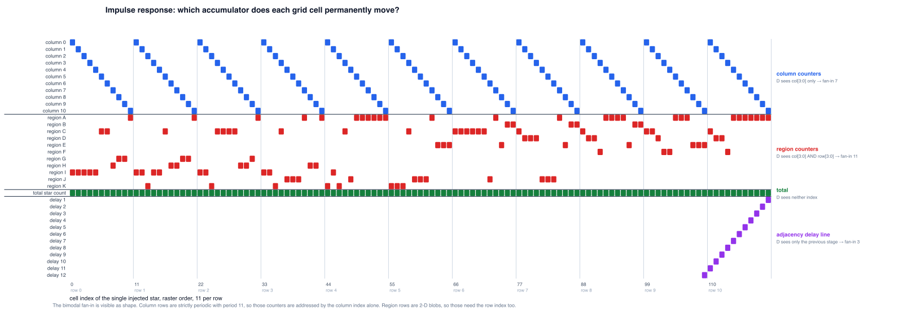
- Maximum divergence is 5 flops out of 79, settling to 3 => Not nonlinear digest
- Exactly three flops change permanently, one of which changes for every
k: 2 per-position accumulators, and one global counter (flop 55 always changes). k = 11reproducesk = 0&k = 12reproducesk = 1exactly => Period of 11
We can deduce that a serial input whose effect depends only on k mod 11 is a raster scan. From this we can infer that the bit stream is a 2-D array read row-by-row, eleven cells per row => 11x11 grid, 121 cells with read row-major with the column advancing fastest.
Combined with the EMPTY SKY hint above, we can almost certainly tell that this is a Star Battle Puzzle.
5. Reading the Machine
Remember the bimodal cluster of 7 and 11? This is where it comes into play:
column accumulator, bit 0 : {own_bit_0, own_bit_1, step, col[3:0]} = 7
region accumulator, bit 0 : {own_bit_0, own_bit_1, step, col[3:0], row[3:0]} = 11
delay-line stage : {previous stage, itself, step} = 3- own_bit_0: the flop’s own Q fed back
- own_bit_1: another flop in the same 2-bit counter (for counting the stars)
- col[3:0] & row[3:0]: cover the 11x11 grid
- column accumulator: we need a separate accumulator since the design is row-major, and we can’t check and reset a column after 1 visit
- region accumulator: same idea
That is the entire content of the bimodality that looked so cryptographic. Not two cipher banks, but two banks of counters addressed by different indices. The self-feedback is a counter holding its value. The arithmetic is +1.
The count is also now clean:
2 flops wired together => 2 bits
22 flops with width 11: 11 regions x 2 bits
22 flops with width 7: 11 columns x 2 bits
2 flops with width 7: row-star counters (passed col[3:0] inside too => detects when the row end to check the number of stars)
1 flop with width 7: a bit of the total-star counter (coincidence, found after solving everything)
Fit the bimodal cluster count perfectly.
Note: If everything seems too abstract for now, just jump straight to section 8 for a quick sneak peek of the architecture.
Reading the region map straight off the silicon
As everything is layout-ed perfectly, solving it becomes easy. We read the region partition directly, by 121 simulations, one per cell, with no inference at all:
for each (r, c) in the 11x11 grid:
run the chip with a single star at (r, c)
record which region flop differs from baseline at the end
that flop's identity IS the region label of (r, c)The answer:
I I I I I C C H G G A region size
I I K I I C H H G G A A 28
I I K C C C C H H G A B 6
I I K C J J J A H H A C 21
K I K C J A A A A A A D 8
K K K C J J J A E E E E 9
C C C C C C J A E B B F 4
C D D D J J J A E B B G 5
C D D F A A A A E B B H 7
C C D F F A A A E E E I 14
C D D F A A A A A A A J 11
K 8Feeding it into a Star Battle generator, we got this:
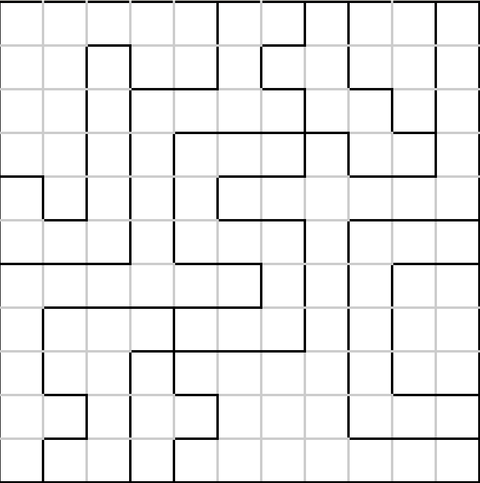
We can all see it right? I know, but I’m going to save it for the easter egg section.
The adjacency window
Next, we have 12 flops with fan-in 3. It is a 12-deep delay line, and we can trace the stage order from reading “which cell leaves a trace in which flop”.
The sticky flag next to it taps exactly four stages: delays 1, 10, 11 and 12. And when we lay those out on the grid:
c-1 c c+1
r-1 12 11 10 <- cells already scanned, this many cycles ago
r 1 *Delay 1 is the cell to the left. Delay 11 is directly above, one full row back. Delays 12 and 10 are the two diagonals above. Only four of the eight neighbors, because adjacency is symmetric and a raster visits every pair exactly once, so checking the four already-seen neighbors of each cell covers all eight-way pairs across the whole grid.
And that is why the flag’s fan-in also includes the column counter: at column 0 the left and up-left neighbors are on the previous row and must be masked out, and at column 10 the up-right one wraps.
6. Solving it
Feed it into a Star Battle Solver, we have the solution:
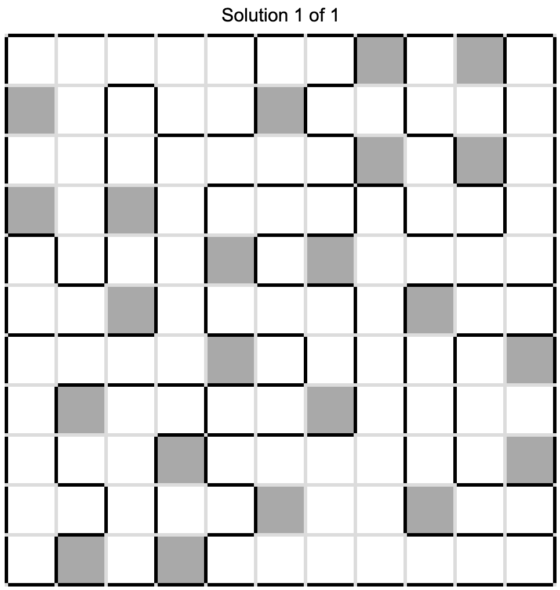
Then we flatten row-major into 121 bits, drive them into the extracted netlist from a cold reset:
cycle 120 : last cell consumed
cycle 121 : success = 1, and stays 1
cycle 121+: O emits 40 42 32 84 87 79 32 83 84 65 82 83 32 42 41
= ( * _ T W O _ S T A R S _ * )We got (* TWO STARS *), another message.
7. Proving the Solution
| Test | Count | Result |
|---|---|---|
| single-star relocations (move one star to any free cell) | 2,178 | all rejected |
| rectangle swaps | 189 | all rejected |
| random 22-star placements | 200 | all rejected |
| placement breaking only adjacency | exists | rejected |
| placement breaking only the region rule | exists | rejected |
All three rules are independently enforced in silicon, and none is a coincidence of the unique solution.
8. Rebuilding the Machine
Now that we have a full understanding of the chip, we’re going to rebuild everything, from RTL to GDS.
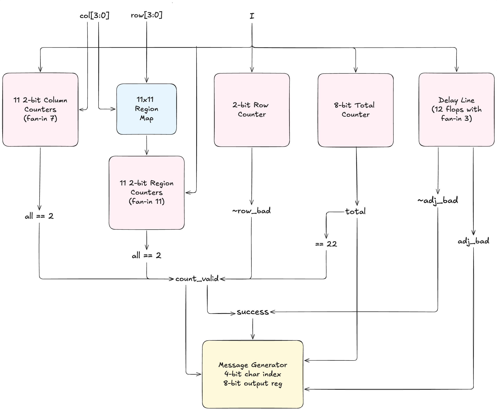
As for the verification, we create the golden vectors from simulating the extracted netlist. This step ensures that the testbench won’t just only encodes our expectations while hiding other edge cases.
18,943 cycles across 119 scenarios: the vendor waveform, the solution, the empty board, 25 relocations, 25 rectangle swaps, 25 random placements, enable stalls mid-grid, enable dropping mid-message, misaligned grids, back-to-back attempts, and reset asserted at every character position of an in-flight message.
| Device under test | Result |
|---|---|
| RTL | bit-exact, 18,943 cycles |
| after synthesis to sky130 gates | bit-exact |
| after place-and-route | bit-exact |
| original | rebuild | |
|---|---|---|
| standard cells | 738 | 758 |
| flip-flops | 92 | 84 |
| standard-cell area | 8,417 µm² | 6,466 µm² |
| die | 60,000 µm² (200 × 300) | 17,237 µm² |
| utilisation | 14.0% | 49.2% |
More cells but less area. 51 of my 758 cells are timing-repair buffers and 29 are clock buffers, none of which is like the OG. Since I didn’t know Jane Street’s target, I just constrained a 12 ns clock. Their clock tree is a single clkbuf_16 feeding two levels while mine is sized to a constraint. Take those 80 buffers out and the remaining logic is smaller than theirs => where the area goes.
Also, the die difference is for the easter eggs’ area. It’s just a floorplanning thing, not logic related.
Splitting both designs by when each flop moves gives an exact accounting:
| original | rebuild | |
|---|---|---|
| checker state | 78 | 78 |
| message sequencer | 6 | 6 |
| output byte register | 8 | 0 |
| total | 92 | 84 |
The checker and the sequencer match flop for flop. The sequencer is a 4-bit character index plus two control flags in both, the only difference being that the original’s index has no reset at all, the four dfxtp that are the only reset-less flops on the die.
Moreover, the OG circuit registers its output byte, which I didn’t implement here. Eight flops, one per bit: four dfstp (set on reset) driving O[0], O[2], O[5], O[7], and four dfrtp driving the rest. I just drive all eight combinationally off the character index.
However, closing the gap is rather straightforward once the structure is known. We just need to decode the next index and register the byte, which keeps O cycle-identical while matching the original’s shape. It is bit-exact on all 18,943 vectors, passes the same equivalence proofs, and synthesises to 91 flops. The 92nd is O[7], which is 0 for every character of all five messages, so yosys just folds it away and the original’s flow did not.
| Signoff, LibreLane 3.0.9 / sky130A / 12 ns | Result |
|---|---|
| DRC (magic, KLayout, router) | 0 / 0 / 0 |
| LVS | 0 |
| antenna violations | 0 |
| setup, all 9 corners | closed, worst +0.137 ns (max_ss_100C_1v60) |
| hold, worst | +0.028 ns |
| max slew | 115 pins, slow corner only, worst 0.98 ns against the PDK’s own 1.5 ns limit |
What building it back found
Rebuilding the chip was actually method. It revealed the one message that the original blackbox-probing method had missed, and completes the set:
| rows | cols | regions | adjacency | message |
|---|---|---|---|---|
| ✓ | ✓ | ✓ | ✓ | (* TWO STARS *) |
| ✓ | ✓ | ✓ | ✗ | TWO"NOT TOUCH |
| no stars at all | EMPTY SKY |
|||
| every cell a star | BIG BANG |
|||
| anything else | TRY AGAIN |
TWO"NOT TOUCH is the one probing never produced. It needs a placement that is correct in every count and wrong only in adjacency, especially when we hadn’t solved the puzzle before probing.
There must be an easier way to figure out this output, but we’d already had the RTL version, so... yeah.
9. Formal Proving the Machine
We can always take it further. To make sure that we cover all the boards, let’s start formally verify the circuit.
A demonstration first
I gave a SAT solver the extracted netlist and exactly one constraint, success == 1. The SAT solver knows nothing else.
$ yosys ... sat -seq 127 -set-init-zero -set-at 127 win 1 -dump_vcd solve.vcd
127 \win 1
Dumping SAT model to VCD file reimpl/out/solve.vcd1.8 seconds. It returned a 121-bit board carrying exactly 22 stars, and that board is the Star Battle solution, identical to our solution. Replaying it through the simulator gives (* TWO STARS *).
We just proved that the whole puzzle can therefore be solved with no knowledge of the puzzle by asking the silicon what would satisfy it.
Turning a circuit into a formula
A SAT solver takes a Boolean formula and answers one of two things: either here is an assignment that makes it true, or no such assignment exists. And to do that, we’re going to unroll the entire circuit, strip its sequential logic & time elements out of the way.
The chip as extracted is 738 cells: 92 flip-flops and 646 combinational gates. Those 92 flops are not a chain with logic between them. They are a single 92-bit register, every bit updating on the same edge, with the whole combinational block wrapped around it in feedback:
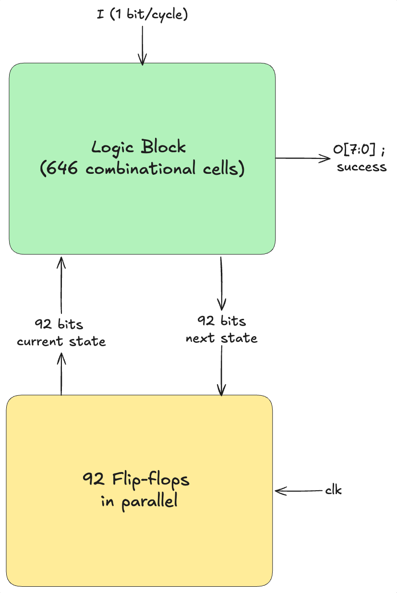
Unrolling makes one copy of that combinational block per clock cycle, and wires copy C’s next-state output straight into copy C+1’s current-state input:
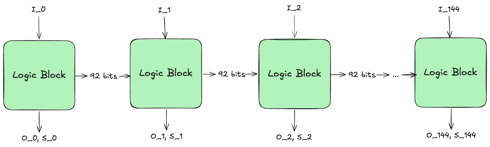
Now the flip-flops are gone. No clock, no memory and no feedback. Just one enormous block of combinational logic, which converts to a formula mechanically.
145 is a window I chose rather than a property of the design. It includes 4 cycles of reset, 121 grid cells, and 20 for the message. It’s also the reason the method is bounded. If anything goes wrong on cycle 146, we wouldn’t know. But let’s assume 145 is safe for now.
Note: only the 145 bits of the input pin are free. Every other variable in the formula, including all 92 state bits at all 145 cycles, is derived. Once the inputs are fixed the gates force everything else.
How does it cover all boards literally?
The inputs go into the formula as symbols and are never assigned a value. The question is not “what happens for this board” but “does a board exist that makes the two designs differ”. UNSAT means no such board exists, established by deduction over the structure of the formula.
For example: suppose the formula contains a AND b = 1 together with NOT a = 1. The first forces a = 1, the second forces a = 0 => contradiction. And b was never assigned. Because b was never touched, that single step covers both of its values at once.
Scale that up. When the solver reaches a contradiction having committed to N of the 145 input bits, it retires every sequence agreeing on those N regardless of the other 145 - N. That is 2145 − N input sequences eliminated in one step. By using reasoning instead of looping through 2145 possible boards, we can iterate through each logical board in seconds.
The miter
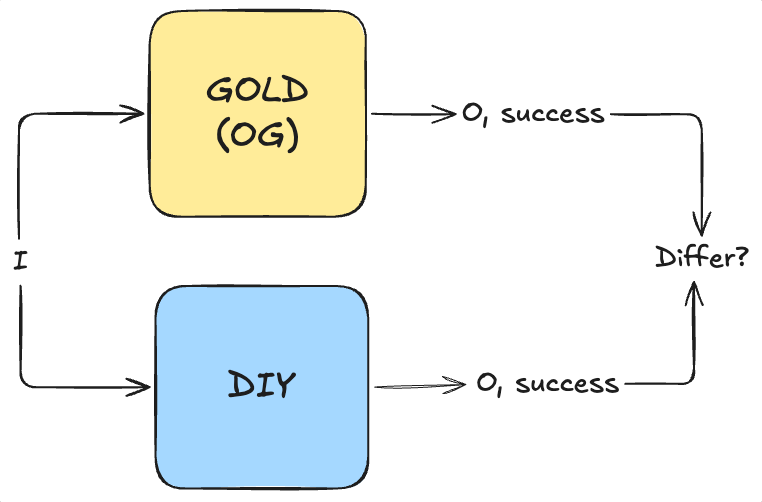
Firstly, it compares outputs only. Even though my own implementation is different from the original (according to the flops & netlist after running RTL-to-GDS), none of that is compared or required to agree.
What the proof found
The first run failed, with a counterexample pointing at U525_a31oi.A1, the floating net from section 2 (confirmed by Jane Street). This is expected since a floating net can take any input it likes, which directly influence the output (not success though). Tracing the net forward through the netlist:
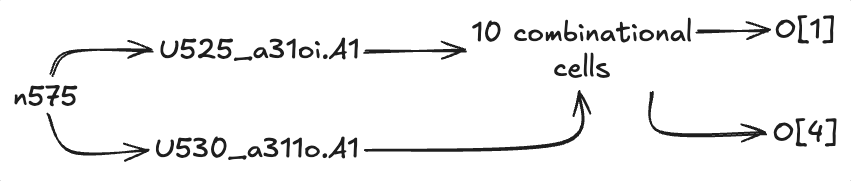
The floating net can move two bits of the output byte, and reaches neither success nor any flip-flop. Touching no state, it cannot influence a later cycle either. Pinning it to 0, the value that reproduces the vendor’s own waveform, and everything goes through:
| Claim | Window | Result |
|---|---|---|
success agrees, for every possible board |
145 cycles, a whole attempt | proved, 4 s |
success agrees for any value the floating net takes |
145 cycles | proved, 4 s |
O && success agree, for every possible board |
145 cycles, the whole attempt including every character of the longest message | proved, 5 min |
O && success agree under arbitrary stalls and mid-stream resets |
100 cycles | proved, 13 s |
| the same, across the full 145-cycle window | 145 cycles | no result after 30 min |
For all 2121 boards, the recovered design and the original agree on the win condition. It takes four seconds, because comparing only success drops the entire message generator out of the cone and the solver never has to consider it.
Row three is the strongest statement in this writeup. Every output byte, on every board, across a complete attempt. 2,049,750 variables and 5,359,575 clauses, and it is worth noting that this instance was intractable earlier in the project: it only became solvable once the counters in my rebuild were fixed to saturate like the original’s, which gave the solver far more internal structure to match up.
The last row is the honest limit. Leaving enable and rst_n free as well, so the solver may stall the scan or reset it anywhere, is proved over 100 cycles but does not finish over 145. So arbitrary stall and reset patterns are covered through the verdict and the opening bytes, and the tail of the message under those conditions rests on the 18,943 simulated cycles instead. Everything on a clean run is proved outright.
10. The Easter Eggs
The Jane Street Logo
This is quite obvious since we only need to open a GDS viewer to see it. The same one appears in the warmup GDS file.
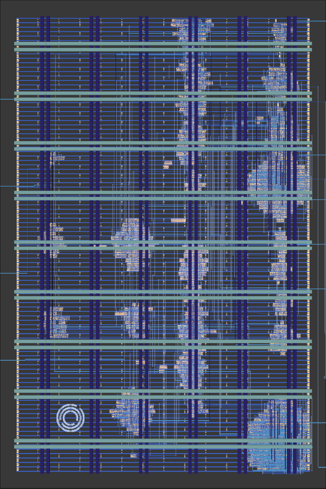
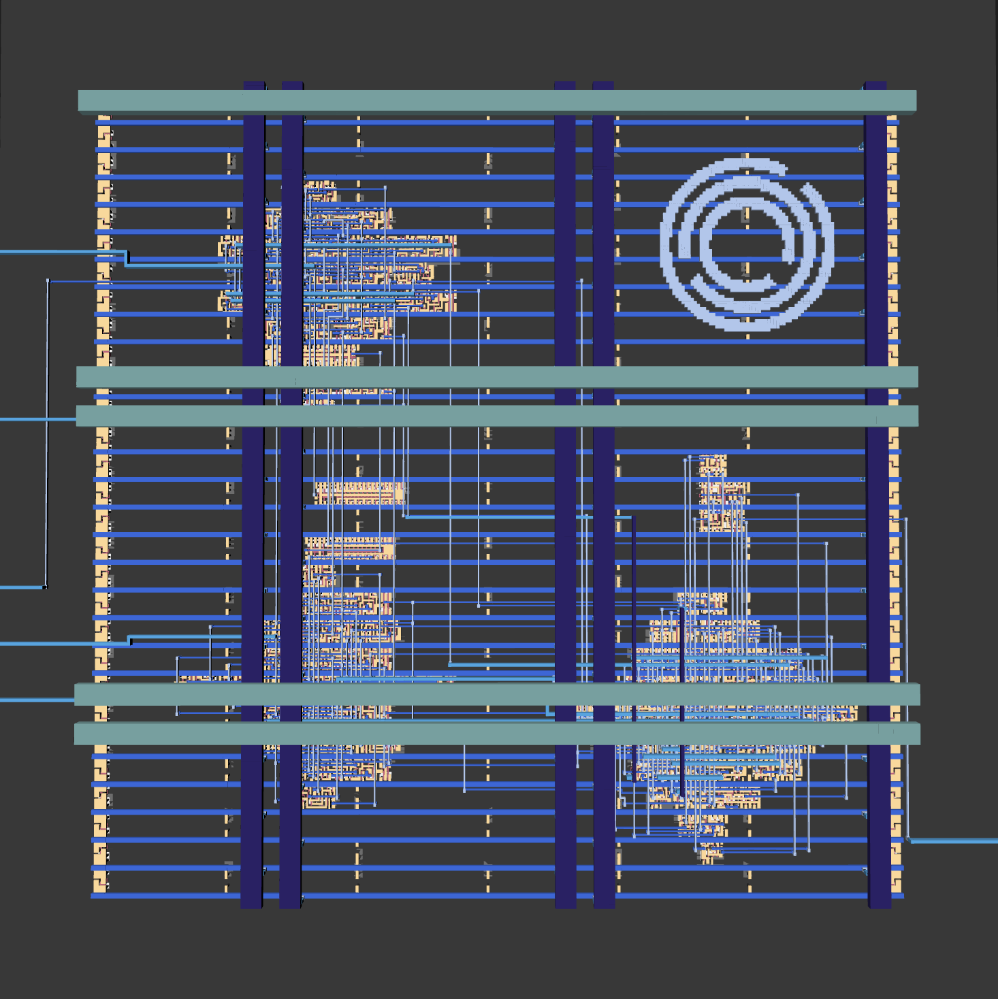
Star Battle Grid
The regions form 3 letters: JSC => Jane Street Capital
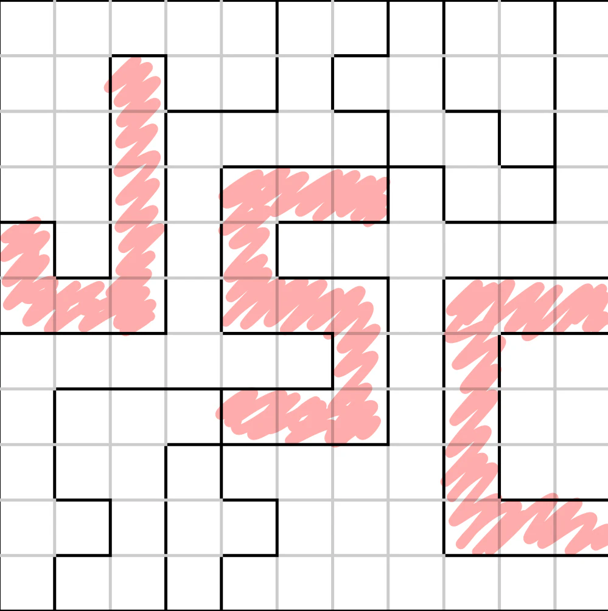
Verilog Attribute
The solution, (* TWO STARS *), is Verilog attribute syntax. Not sure if it’s an easter egg, but it’s cool that the winning message is wrapped inside the language the chip was written in (I was so wrong here. Reading other write ups, it appears that (* *) is how you comment in Hardcaml/OCaml, Jane Street’s aces. This chip is probably writed in Hardcaml too (wild guess))
Perfect Number
In the warm-up puzzle, Jane Street chose comparator496, the third perfect number. According to other writeups, there are some more perfect numbers throughout the warmup files, but I don’t have the links to them & forgot what the numbers are so yeah we skipping that.
Morse code
On the outer bound of the chip, we can see the layer:
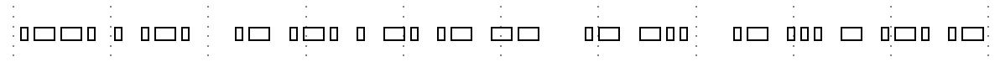
.--. . .-. / .- .-. . -. .- -- / .- -.. / .- ... - .-. .-
P E R A R E N A M A D A S T R APER ARENAM AD ASTRA, or “through the arena to the stars”. A pun on per aspera ad astra (“through hardships to the stars”). Arena here can mean the grid we playing the Star Battle on, and also, in Latin, it refers to a sandy place, and silicon is sand. Tuff word play. Like actually so cold I can’t lie. They cooked so hard here.
A message in the sample stimulus
This one might be the trickiest one, and it’s in example_inputs.vcd, the sample waveform the puzzle ships alongside the GDS.
The file’s $date reads Sat Dec 31 23:59:60 2016, a real UTC leap second. This can stand on its own as another easter egg.
Its $version field shows “Leave no stone unturned! But for this file, consider looking at it in a waveform viewer instead.” It seems like it’s telling us to read the stimulus instead of just replaying them through the netlist just to get TRY AGAIN twice.
So we folded the I stream into the same 11-wide raster that gave us the region map, and
attempt 1 (columns 0-10): 4 3 5 4 3 10 9 0 0 0 0 total 38
attempt 2 (columns 0-10): 7 3 2 3 4 11 8 0 0 0 0 total 38First of all, 38 stars on a 11x11 grid? Those are not real attempts to solve the board, hinting at something else. Secondly, columns 7-10 are identically zero across all 22 rows of both attempts.
It’s obviously telling us to only read the first 7 bits. And when we read those bits as a byte, column 0 as the LSB up to column 6 as the MSB, and every one of the 22 rows decodes cleanly to printable ASCII, we have this:
attempt 1 attempt 2
row 0 0010101 -> 1010100 = 0x54 'T' row 0 1101011 -> 1101011 = 0x6b 'k'
row 1 0001011 -> 1101000 = 0x68 'h' row 1 1001111 -> 1111001 = 0x79 'y'
row 2 1010011 -> 1100101 = 0x65 'e' row 2 0000010 -> 0100000 = 0x20 ' '
row 3 0000010 -> 0100000 = 0x20 ' ' row 3 1000011 -> 1100001 = 0x61 'a'
row 4 0111011 -> 1101110 = 0x6e 'n' row 4 1110111 -> 1110111 = 0x77 'w'
row 5 1001011 -> 1101001 = 0x69 'i' row 5 1000011 -> 1100001 = 0x61 'a'
row 6 1110011 -> 1100111 = 0x67 'g' row 6 1001011 -> 1101001 = 0x69 'i'
row 7 0001011 -> 1101000 = 0x68 'h' row 7 0010111 -> 1110100 = 0x74 't'
row 8 0010111 -> 1110100 = 0x74 't' row 8 1100111 -> 1110011 = 0x73 's'
row 9 0000010 -> 0100000 = 0x20 ' ' row 9 0000010 -> 0100000 = 0x20 ' '
row10 1100111 -> 1110011 = 0x73 's' row10 0000010 -> 0100000 = 0x20 ' 'The night sky awaits
As expected from Jane Street. Such sophisticated eggs.
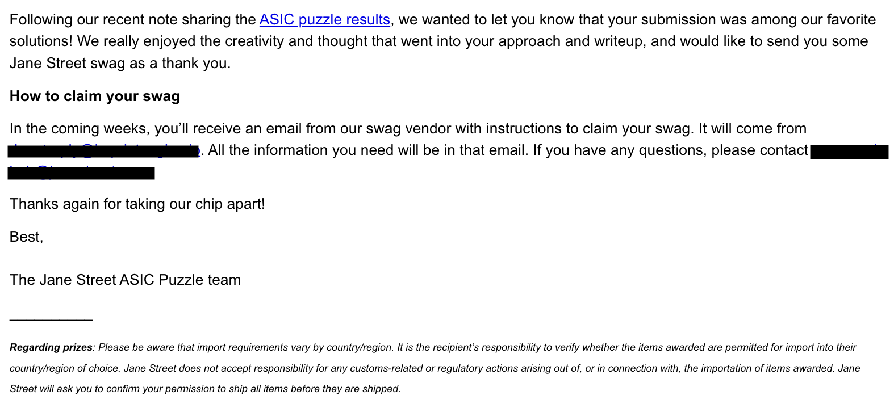